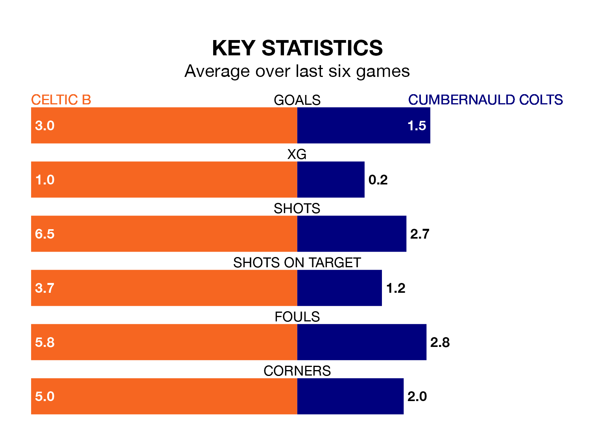

Celtic B face a challenge to maintain their high-scoring form at home against a tight Cumbernauld Colts defence on Tuesday.
With 69 goals in 29 games, Celtic B are the third-highest scorers in the Lowland Football League ahead of the 7.45pm kick-off at the Excelsior Stadium.
They face a Colts side who have scored 60 in 30 matches, but conceded only 36 goals, putting them joint-second among the league's tightest defences – only Albion Rovers have conceded fewer goals.
Celtic B are in fantastic form in the Lowland Football League, with five wins and a draw from their last six games.
With two wins and three draws over that period, Cumbernauld Colts's form is much worse – they have taken nine points from 18, compared to the hosts' 16.
Colts are fifth in the table after 30 games, of which they have won 16 and drawn eight, earning 56 points.
Celtic B are one place behind the away team in sixth, with 15 wins and five draws putting them on 50 points.
In the last five years, Celtic B and Cumbernauld Colts have played each other on five occasions. Celtic B won one of them, Cumbernauld Colts two, and they drew twice.
On average, Celtic B scored 1.4 goals and Colts 1.6 in those matches.
Their last meeting was on July 22, when Cumbernauld Colts won 1-0 at home.
Celtic B's last match was on March 16, a 1-1 draw against Albion Rovers.
Cumbernauld Colts lost 1-0 against Albion Rovers last time out, on March 19.
Updated: 10:31 (UTC), 31/03/24